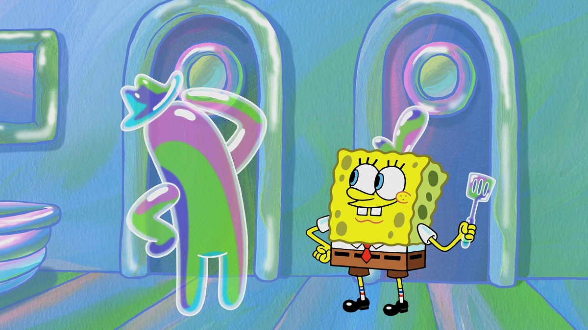
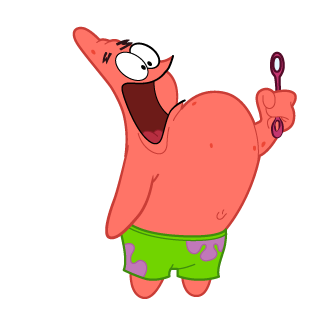
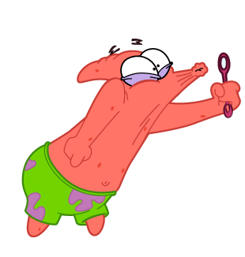
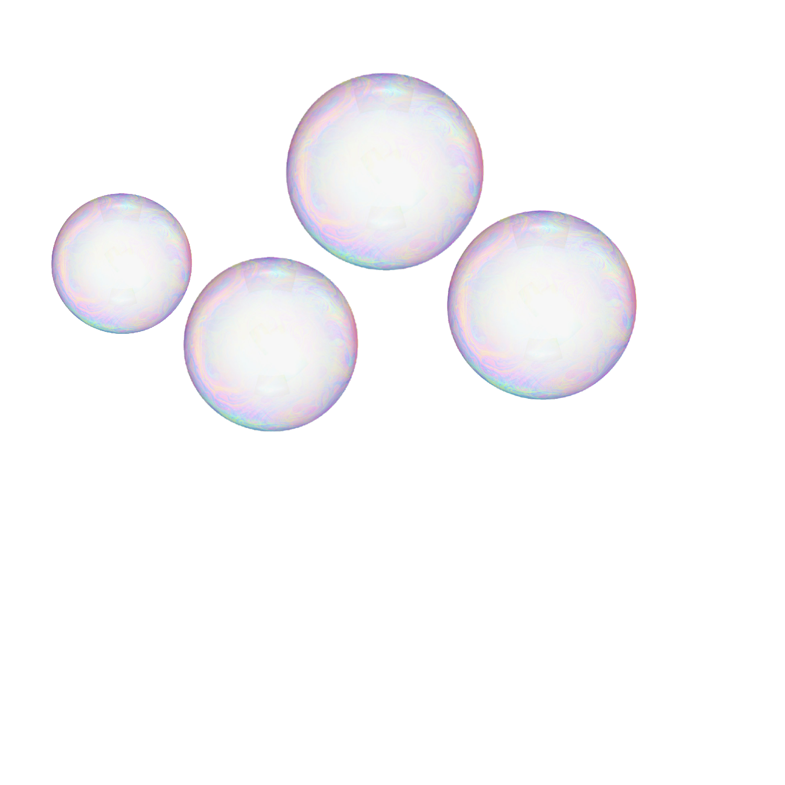

Space Away ---> One random article a day
How to blow the perfect soap bubbles, explained by science

Studying bubbles has actually been a century-long intellectual pursuit that has helped scientists gain valuable physical and mathematical insights. For instance, a soap bubble is a perfect example of surface tension in action. It’s because of surface tension that bubbles are round — it’s this shape that determines a minimal surface area for a given volume and, hence, requires the least amount of energy to maintain. And it’s thanks to soap bubbles that some complex mathematical problems have been solved with real-world applications following not long after. For instance, equations that describe soap bubble formation have helped architects design roofs whose shape look impossible but are stable nonetheless. The Olympic Stadium in Munich is an illustrating example.
Most recently, researchers at New York University (NYU) devised a series of experiments to help them blow the perfect bubble we’ve been chasing since we were kids. These revealed that, essentially, there are only two ways in which bubbles can be made: one is by blowing a strong, steady wind on a soap film, the other is by pushing with a gentle wind in an already inflated film to raise its volume.
Physicists have unpacked the physics behind one of childhood’s favorite pastimes: blowing soap bubbles. Their experiments have revealed what’s the perfect size for a circular wand and the optimal wind speed required to blow bubbles that don’t pop. And while this may sound like a trivial study worthy of an Ig Nobel Prize, the study might actually help manufacturers make better sprays, foams, emulsions, and basically anything that has bubbles in it.
Studying bubbles has actually been a century-long intellectual pursuit that has helped scientists gain valuable physical and mathematical insights. For instance, a soap bubble is a perfect example of surface tension in action. It’s because of surface tension that bubbles are round — it’s this shape that determines a minimal surface area for a given volume and, hence, requires the least amount of energy to maintain. And it’s thanks to soap bubbles that some complex mathematical problems have been solved with real-world applications following not long after. For instance, equations that describe soap bubble formation have helped architects design roofs whose shape look impossible but are stable nonetheless. The Olympic Stadium in Munich is an illustrating example.
Most recently, researchers at New York University (NYU) devised a series of experiments to help them blow the perfect bubble we’ve been chasing since we were kids. These revealed that, essentially, there are only two ways in which bubbles can be made: one is by blowing a strong, steady wind on a soap film, the other is by pushing with a gentle wind in an already inflated film to raise its volume.



“This second method might explain how we often blow bubbles as kids: a quick puff bends the film outward and thereafter the film keeps growing even as the flow of air slows,” said Leif Ristroph, an assistant professor at NYU’s Courant Institute of Mathematical Sciences who led the study, in a a statement.The first method, on the other hand, is less widely used.
“This is used by the bubble blowers we see in parks in the summertime,” explained Ristroph. “They simply walk, sufficiently fast, it seems, with a soapy loop of rope, which provides the relative wind needed to stretch out the film.”Blowing bubbles is essentially a question of how a liquid film interacts with an imposed flow of an external fluid, in this case, air. However, for their experiments, the researchers used oil films suspended in flowing water and pushed through a wire loop wand. Using water instead of air allowed the researchers to control, measure, and observe the flows more accurately. What’s more, the observations matched the theoretical predictions for the film’s shape. So, if you’d like to make perfect bubbles, according to this study you’d better find a wand with a 1.5-inch perimeter and gently blow at a consistent velocity of 6.9 cm/s. Any faster or slower, and the bubble will eventually burst; the same goes for the wand if it’s smaller or larger. On to you! to top of page